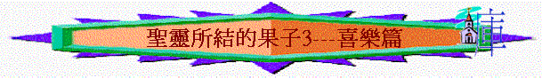

一.喜樂的重要
1.是良藥
「喜樂的心乃是良藥；憂傷的靈使骨枯乾。」箴17:22
2.是力量
「又對他們說：「你們去吃肥美的，喝甘甜的，有不能預備的就分給他，因為今日是我們主的聖日。你們不要憂愁，因靠耶和華而得的喜樂是你們的力量。」」尼8:10
3.是定意
「要常常喜樂，不住的禱告，凡事謝恩；因為這是神在基督耶穌裡向你們所定的旨意。」帖前5:16-18
二.喜樂的特質
～基督徒們擁有的喜樂與世人不同，我們有以下超越的特質
1.從心裡喜樂
「你們現在也是憂愁，但我要再見你們，你們的心就喜樂了；這喜樂也沒有人能奪去。」約16:22
2.沒人奪去的
「你們現在也是憂愁，但我要再見你們，你們的心就喜樂了；這喜樂也沒有人能奪去。」約16:22
3.諸般的喜樂
「但願使人有盼望的神，因信將諸般的喜樂、平安充滿你們的心，使你們藉著聖靈的能力大有盼望。」羅15:13
4.滿足的喜樂
「向來你們沒有奉我的名求什麼，如今你們求，就必得著，叫你們的喜樂可以滿足。」」約16:24
5.有主的喜樂
「這些事我已經對你們說了，是要叫我的喜樂存在你們心裡，並叫你們的喜樂可以滿足。」約15:11
6.患難也喜樂
「我大大的放膽，向你們說話；我因你們多多誇口，滿得安慰；我們在一切患難中分外的快樂。」林後7:4
「就是他們在患難中受大試煉的時候，仍有滿足的快樂，在極窮之間還格外顯出他們樂捐的厚恩。」林後8:2
三.喜樂的時間
1.祈求時
「每逢為你們眾人祈求的時候，常是歡歡喜喜的祈求。」腓1:4
2.接待時
「故此，你們要在主裡歡歡樂樂的接待他，而且要尊重這樣的人；」腓2:29
3.苦難時
「照他榮耀的權能，得以在各樣的力上加力，好叫你們凡事歡歡喜喜的忍耐寬容；」西1:11
「因為你們體恤了那些被捆鎖的人，並且你們的家業被人搶去，也甘心忍受，知道自己有更美長存的家業。」來10:34
四.喜樂的因素
1.因聖靈而喜樂
「因為神的國不在乎吃喝，只在乎公義、和平，並聖靈中的喜樂。」羅14:17
「聖靈所結的果子，就是仁愛、喜樂、和平、忍耐、恩慈、良善、信實、」加5:22
2.因救恩而喜樂
A.得著天國
「天國好像寶貝藏在地裡，人遇見了就把他藏起來，歡歡喜喜的去變賣一切所有的，買這塊地。」太13:44
B.因信稱義
「我們既因信稱義，就藉著我們的主耶穌基督得與神相和。」羅5:1
C.與神和好
「我們既因信稱義，就藉著我們的主耶穌基督得與神相和。」羅5:1
D.站在恩中
「我們又藉著他，因信得進入現在所站的這恩典中，並且歡歡喜喜盼望神的榮耀。」羅5:2
E.盼望榮耀
「我們又藉著他，因信得進入現在所站的這恩典中，並且歡歡喜喜盼望神的榮耀。」羅5:2
F.可以成長
「不但如此，就是在患難中也是歡歡喜喜的；因為知道患難生忍耐，忍耐生老練，老練生盼望；」羅5:3-4
G.領受神愛
「盼望不至於羞恥，因為所賜給我們的聖靈將神的愛澆灌在我們心裡。因我們還軟弱的時候，基督就按所定的日期為罪人死。為義人死，是少有的；為仁人死、或者有敢做的。惟有基督在我們還作罪人的時候為我們死，神的愛就在此向我們顯明了。現在我們既靠著他的血稱義，就更要藉著他免去神的忿怒。因為我們作仇敵的時候，且藉著神兒子的死，得與神和好；既已和好，就更要因他的生得救了。」羅5:5-10
H.以神為樂
「不但如此，我們既藉著我主耶穌基督得與神和好，也就藉著他以神為樂。」羅5:11
3.因基督而喜樂
A.相信主而喜樂
「你們雖然沒有見過他，卻是愛他；如今雖不得看見，卻因信他就有說不出來、滿有榮光的大喜樂；」彼前1:8
B.見主面而喜樂
「娶新婦的就是新郎；新郎的朋友站著，聽見新郎的聲音就甚喜樂。故此，我這喜樂滿足了。」約3:29
「你們現在也是憂愁，但我要再見你們，你們的心就喜樂了；這喜樂也沒有人能奪去。」約16:22
C.在主裡面喜樂
「你們要靠主常常喜樂。我再說，你們要喜樂。」腓4:4
～「靠主」即住在主裡面，連於主，倚靠主，因而喜樂！
D.聽主道而喜樂
「這些事我已經對你們說了，是要叫我的喜樂存在你們心裡，並叫你們的喜樂可以滿足。」約15:11
「現在我往你那裡去，我還在世上說這話，是叫他們心裡充滿我的喜樂。」約17:13
E.效法主而喜樂
a.主知神美意而歡樂
「正當那時，耶穌被聖靈感動就歡樂，說：「父啊，天地的主，我感謝你！因為你將這些事向聰明通達人就藏起來，向嬰孩就顯出來。父啊！是的，因為你的美意本是如此。」路10:21
b.主行神旨意而滿足
「耶穌說：「我的食物就是遵行差我來者的旨意，作成他的工。」約4:34
c.主看神榮耀而喜樂
「仰望為我們信心創始成終的耶穌（或作：仰望那將真道創始成終的耶穌）。他因那擺在前面的喜樂，就輕看羞辱，忍受了十字架的苦難，便坐在神寶座的右邊。」來12:2
4.因祈禱而喜樂
A.祈求不足
「我的弟兄們，你們落在百般試煉中，都要以為大喜樂；」
雅1:2
「你們中間若有缺少智慧的，應當求那厚賜與眾人、也不斥責人的神，主就必賜給他。」雅1:5
B.凡事謝恩
「要常常喜樂，不住的禱告，凡事謝恩；因為這是神在基督耶穌裡向你們所定的旨意。」帖前5:16-18
C.凡事禱告
「應當一無掛慮，只要凡事藉著禱告、祈求，和感謝，將你們所要的告訴神。神所賜、出人意外的平安必在基督耶穌裡保守你們的心懷意念。」腓4:6-7
5.因認知而喜樂
「我的弟兄們，你們落在百般試煉中，都要以為大喜樂；」雅1:2
A.因知患難使人完備
「因為知道你們的信心經過試驗，就生忍耐。但忍耐也當成功，使你們成全、完備，毫無缺欠。」雅1:3-4
B.因知世物終必消沒
「卑微的弟兄升高，就該喜樂；富足的降卑，也該如此；因為他必要過去，如同草上的花一樣。太陽出來，熱風颳起，草就枯乾，花也凋謝，美容就消沒了；那富足的人，在他所行的事上也要這樣衰殘。」雅1:9-11
C.因知將來必有奬賞
「忍受試探的人是有福的，因為他經過試驗以後，必得生命的冠冕，這是主應許給那些愛他之人的。」雅1:12
6.因信徒而喜樂
A.與信徒相交而喜樂
「我們將所看見、所聽見的傳給你們，使你們與我們相交。我們乃是與父並他兒子耶穌基督相交的。我們將這些話寫給你們，使你們（有古卷：我們）的喜樂充足。」約壹1:3-4
B.見信徒成長而喜樂
「你們就要意念相同，愛心相同，有一樣的心思，有一樣的意念，使我的喜樂可以滿足。」腓2:2
「我所親愛、所想念的弟兄們，你們就是我的喜樂，我的冠冕。我親愛的弟兄，你們應當靠主站立得穩。」腓4:1
C.得信徒想念而喜樂
「不但藉著他來，也藉著他從你們所得的安慰，安慰了我們；因他把你們的想念、哀慟，和向我的熱心，都告訴了我，叫我更加歡喜。」林後7:7
D.見別人快樂而快樂
「與喜樂的人要同樂；與哀哭的人要同哭。」羅12:15
E.見信徒行道而喜樂
「有弟兄來證明你心裡存的真理，正如你按真理而行，我就甚喜樂。」約叁1:4
附篇---喜樂人生
引言（羅5:1-11）
整段聖經時常題及「盼望」、「歡歡喜喜」的字眼，原來我們的信仰是可以十分積極、喜樂、活潑及帶來盼望的。筆者曾經見過一些基督徒時常帶著愁容回到教會中，彷彿有很多憂慮、重擔壓在他們身上，但自己也見到一些信徒，他們生活同樣遇到困難，但卻顯出信心、喜樂的樣式。而事實上聖經題到我們的信仰比起世人更超然，因為5:3題及「就是在患難中也是歡歡喜喜的」，在逆境中，我們也可以有喜樂，有盼望。究竟基督徒為何可以歡歡喜喜及積極面對每一天？有以下幾個主要原因：
一.救恩（羅5:1-2）
我們若單看地上的難處，會令我們感到無奈，消極，但若看看今天信主後神給我們的救恩，就是單思想我們現在所擁有的恩典，足以令我們歡呼。
1.因信稱義
很多信徒不開心的原因是因為覺得自己很軟弱，比別人差，甚至在過份自卑下不敢來到神前，但無論我們如何看自己，神已經因著我們的信，白白稱我們為義，為好，我們可以在神前是聖徒，是有義的評價了！記得在中學時候，有一位老師曾經稱讚我在一個崗位上有很好的表現，當聽到他的讚許時，心中有一份難以形容的喜悅；後來，我想到若神稱讚我為義為好，豈不比人的讚賞更快樂嗎！
2.與神和好
很多年前，曾經和一位肢體有不和睦的情況，那時心中有掙扎，有感到不快情況，我們以前也是與神不和的，是作仇敵的，但今日竟可藉主能解開歷世歷代解不開的結，可以與神相和。神是我們的阿爸父，我們是祂的兒女，可以坦然無懼來到祂前，這是我們的快樂！
3.站在恩中
聖經題及我們現已進入所站的這恩典中，有時環境會令我們感到懼怕，筆者試過在行山途中遇到惡犬，單看牠們時，自己會感到驚惶及想退縮，我們也是一樣，單看一些難處時，有時令我們不想繼續向前邁進一步。但聖經說我們現在不是站在絕望、無助的領域中，我們是在神的恩典與救恩內，我們一生一世也是站在恩中，靠這恩我們深信神會掌管我們的一生，直到見主面，我們只管靠現在所站的恩典，繼續積極行前面的路程。
二.榮耀（羅5:2）
筆者在小學時期，曾經有一次代表全級同學上台致送紀念品給與學校，自己當時是感到很榮耀的，而我們的信仰更超越，我們所盼望的是神兒女得享自由的榮耀，今日我們有勞苦歎息，因為我們仍舊有這朽壞的身子，但將來這身子會改變，我們不再受勞苦、老我轄制，有榮耀的身子，甚至可以與基督同得榮耀！
曾經有一個美國專家研究一間服裝工廠的女工的疲倦程度，結果他發現第一批女工特別疲乏，她們大多數完了工作後是沒有節目的，但另一批卻沒有這麼疲倦，因她們完了工作後是有約會及節目的，原來等候約會成為她們現有工作的推動力；我們一樣，當我們等候將來在大榮耀時，就成為我們的推動力，使我們對現有的苦楚可以不足介意了！
三.成長（羅5:3-4）
信徒在患難中是可以成長，因為患難生忍耐，忍耐可驗正我們的信仰是真實，經過不斷試煉後，我們可以生出盼望來。最近一位傳道人分享神給了他一個兒子，但生來是沒有了幾隻手指，也沒有了一隻腳，但他卻從中體會神的美意與神的恩典，筆者相信他不是在剎那間便可以有此屬靈的看見，他經過艱難、眼淚，祈禱後生命才有成長；生命的成長是用幾多金錢都未必可以達成的。但患難使我們有長進，儘然我們會有眼淚（也是正常的），但在艱難中，想起我們內在生命又不斷更新，我們可以以軟弱為可誇了！
四.神愛（羅5:5-10）
此段聖經用了一種比較，我們以前很軟弱，在未信前，作仇敵時，神已將祂兒子賜給我們，主已為我們還作罪人的時候為我們死，神的愛就在此顯明了，以前在這樣不好的光景及地位上，神已這樣愛我們，現在我們已是稱義的兒女，身份已抬高了，神的恩與神的愛豈不更加加倍臨到我們？使我們對前面蒙恩的路更有信心，更相信主的應許是不會落空的！
我的姪兒成績曾經十分不好，作為叔叔的自己想鼓勵他努力讀書，所以應承他若他考至全班十名以內，會獎勵給他。我想若他真達到第十名，我們全家也歡喜，若他有一日可以成為全級第一（當然成績不代表一切，最重要是他有努力讀書），我們豈不更加獎勵他呢！神過往在我們還作仇敵時，已這樣愛我們，弟兄姊妹啊！我們現己是與神相和，我們信不信主會更愛我們，更賜福與我們呢！
五.神（羅5:11）
當我們擁有以上一切時，我們真能做到聖經所講「以神為樂」，有神就有救恩，榮耀，成長與神的愛，神是我們的神，這是我們人生最快樂的事情！筆者有一次遇到非常困難的事情，但當我獨自默想，突然想到原來「神是我的神」，我已擁有全世界最寶貴的事──就是神了！神與我有關的，為何我還不滿足，獨自憂愁呢？
但願我們每一個肢體，當想起我們的神，我們現在所站的恩典，將來的盼望，神豐盛的愛時，我們的人生可以時常歡歡喜喜，充滿活潑與積極。